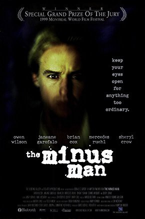
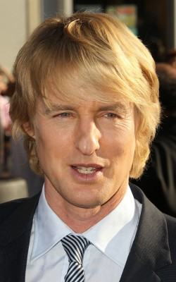
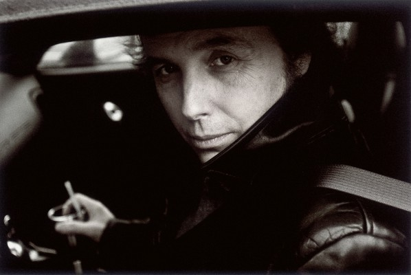
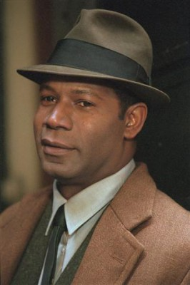
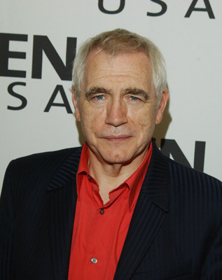
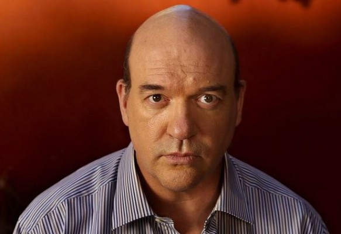

#8484 The Minus Man - Der nette Mörder von nebenan
Alternativ: The Minus Man
 
 IMDB-Wertung: 6.2 / 10
IMDB-Wertung: 6.2 / 10  Metascore: 0
Metascore: 0 
A cold-blooded serial killer floats around the country and chooses his victims from people who complain about their lives and indicate a willingness to be killed. His murders are introduced with the killing of an asthmatic junkie. The killer settles into a seaside rooming house run by an unhappy married couple and waits for his next victims to unveil themselves. Dream cops plague his nights, while plotting his murders. Meanwhile, he also starts a relationship with a postal clerk.
Jahr: 1999
Dauer: 106 Minuten
FSK: 12
Land: USA Studio: Artisan EntertainmentTonspuren:
Untertitel:
Auflösung: 720p (1280x720) Größe: 2652 MB
Genre: Thriller, Drama, Krimi, Mystery
Regisseur: Hampton Fancher
Drehbuch: Lew McCreary
Soundtrack: Marco Beltrami
Darsteller:
-  Owen Wilson als Vann
- Sheryl Crow als Casper
-  Dwight Yoakam als Blair
-  Dennis Haysbert als Graves
- Alex Warren als State Trooper
- Mercedes Ruehl als Jane
-  Brian Cox als Doug
- Eric Mabius als Gene
- Larry Miller als Paul
 Janeane Garofalo als Ferrin
Janeane Garofalo als Ferrin- Brent Briscoe als Chief of Police
- John Vargas als Priest
- Meg Foster als Irene
- David Warshofsky als Pate
- Mark Derwin als Creech
- Matt Gerald als Arresting Officer
- Petey als Barking Dog
- Flo Lawrence als Lady Behind Counter (uncredited)
-  John Carroll Lynch als Bartender (uncredited)
- Chloe Black als Karen - Age 18
- Lois Gerace als Lois
- Erik Holland als Coach
- Danny 'Big Black' Rey als Arthur
- Axel Ovregaard als Joe La Moine
- Lew McCreary als Man in Diner
- Shannon Kies als Wendy
- Madeleine Ignon als Karen - Age 5
- María Díaz als Anchorwoman
- Little Jake als The General
- Bogus als Beach Dog
- Nitro the Cat als Zip Code
- Kevin Halloran als Reporter (uncredited)
Datei: X:\1999\Minus Man - Der nette Mörder von nebenan, The (1999, FSK12, 1280x720).mkv seit 07.03.2018
Festplatte: HD 1996-2002
 Es gibt insgesamt 81 Filme in der Gruppe '1999'
Es gibt insgesamt 81 Filme in der Gruppe '1999'